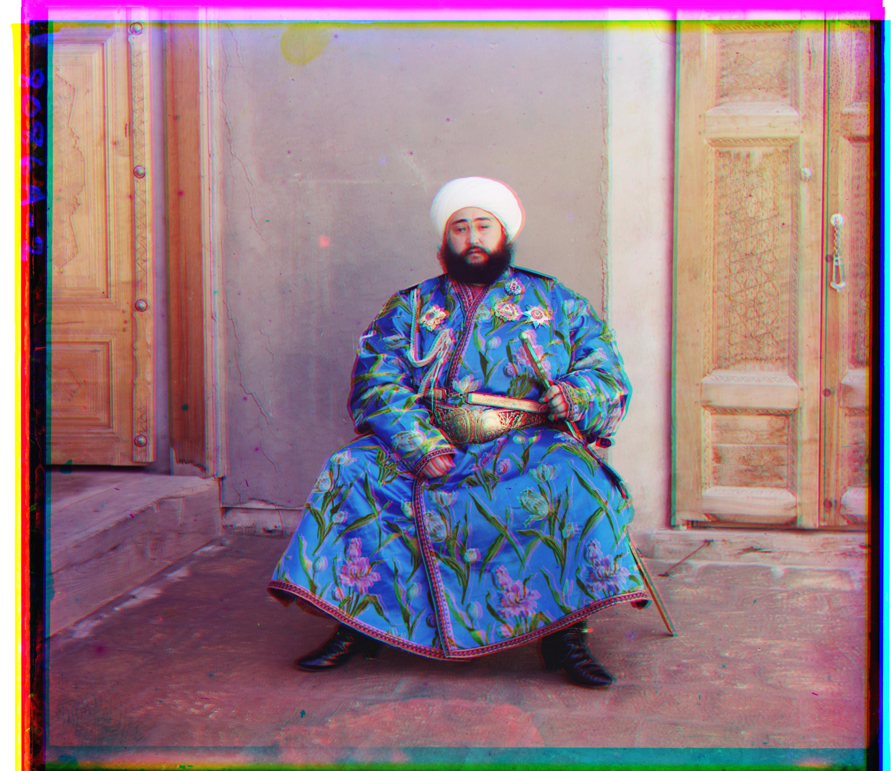
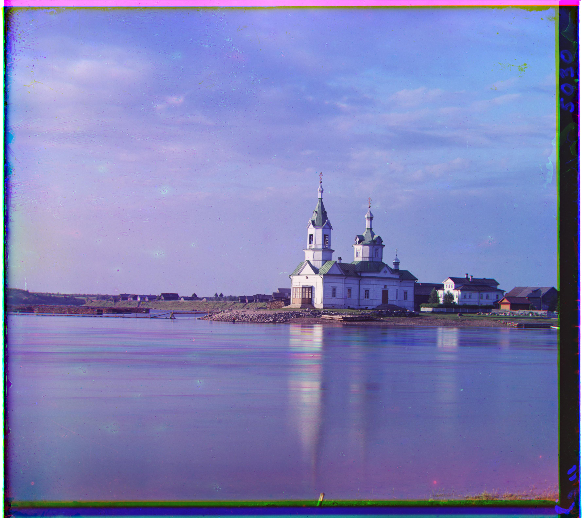
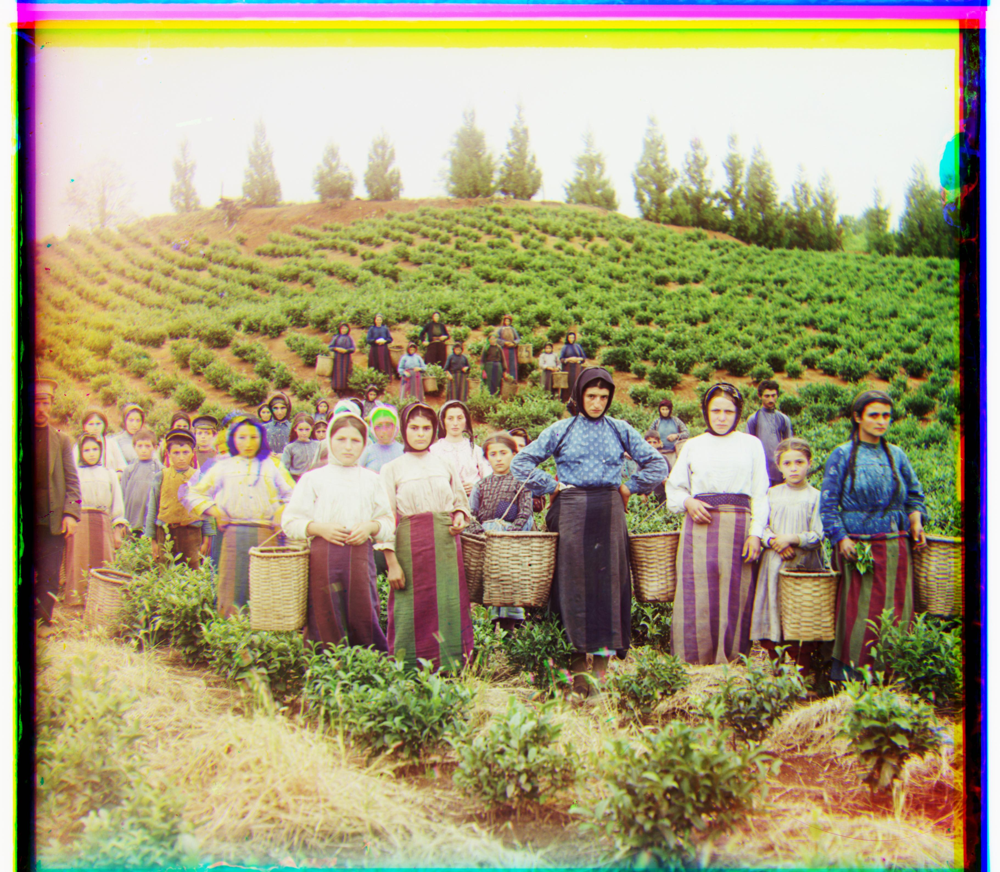
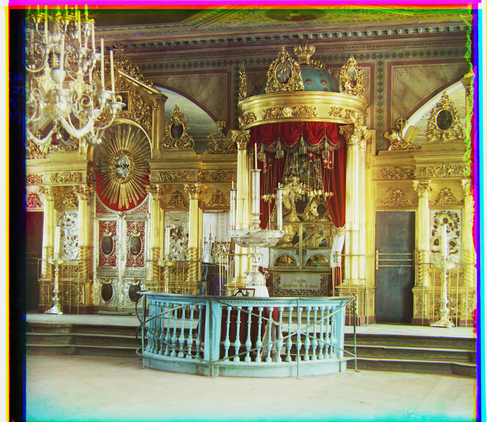
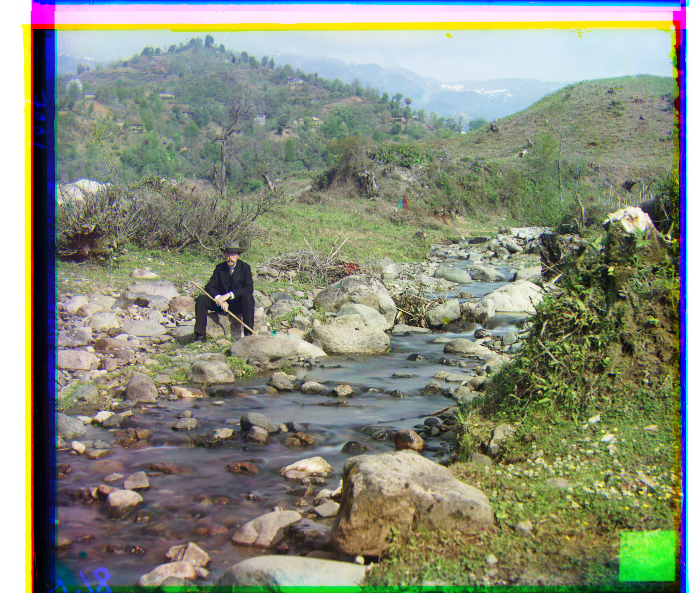
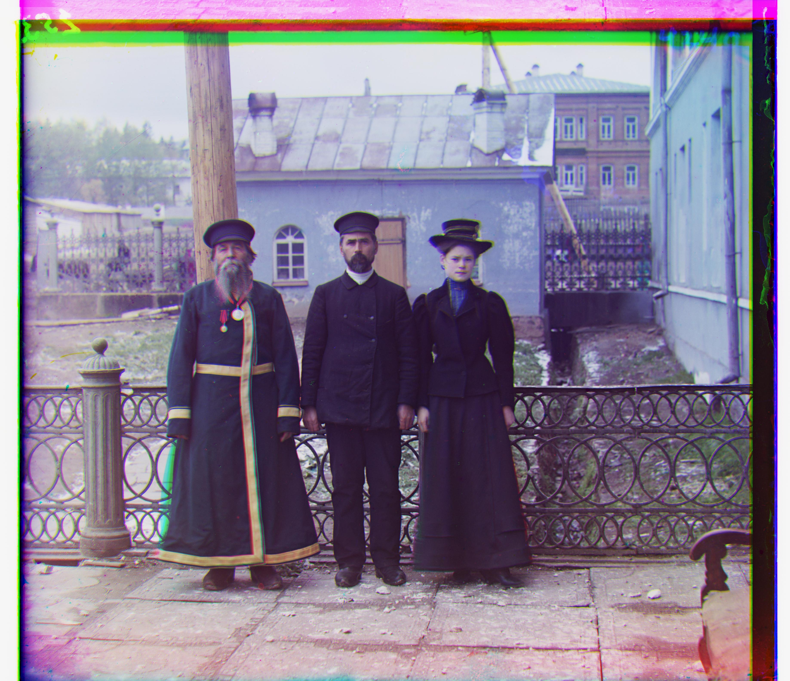
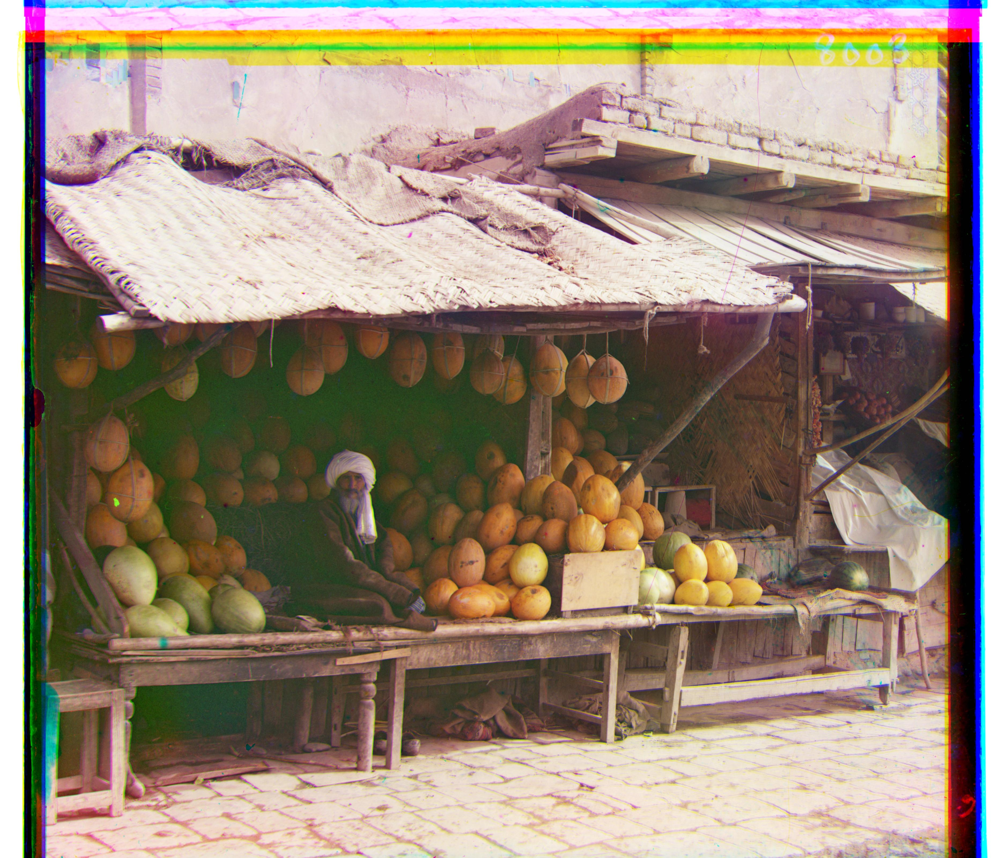
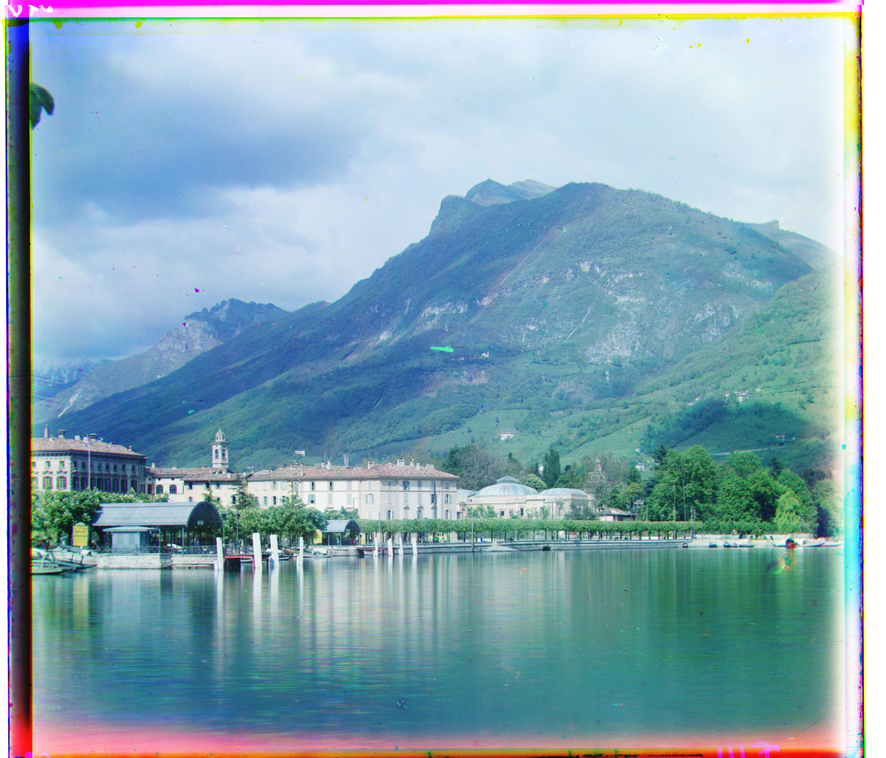
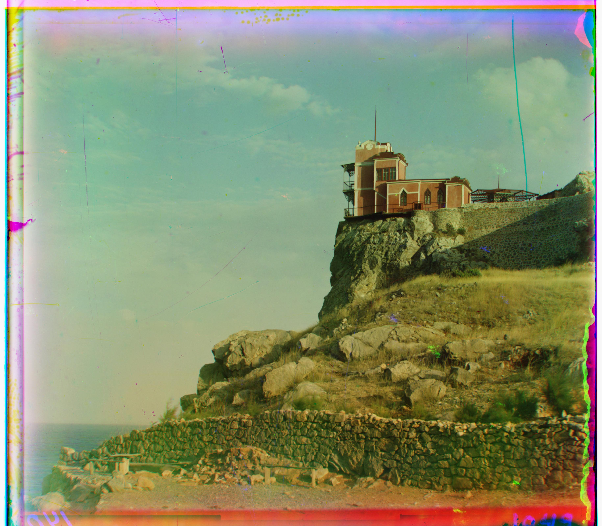
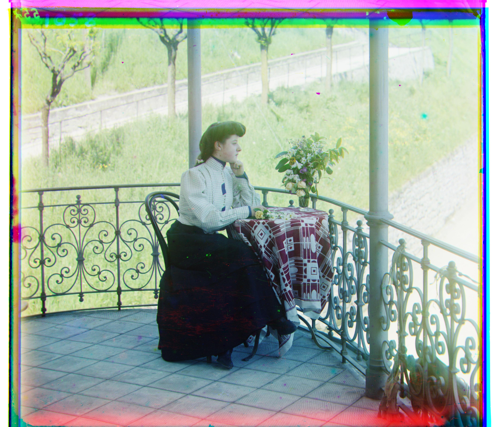

Large Images
Pyramid Alignment Algorithm
Hover over images to see alignment offsets and processing times. Click to enlarge!
Processing Time
< 4 seconds per image
Searching Window
±15 pixels (coarsest level)
±2 pixels at finer levelsMetric
Normalized Cross-Correlation
Emir uses L2 distance










